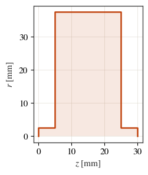
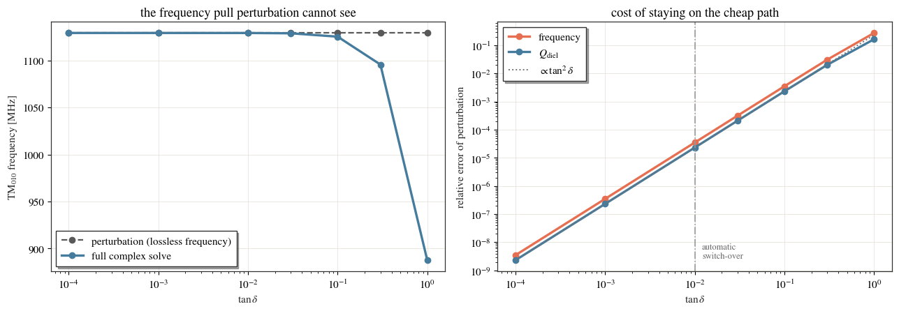

Dielectric loss: perturbation vs the full complex eigenproblem¶
A dielectric region can be lossy. With the \(e^{+j\omega t}\) convention its permittivity is complex,
and there are two very different ways to get \(Q\) out of that.
Perturbation. Solve the cavity as if it were lossless, then integrate the loss over the field that comes out:
This costs nothing beyond the lossless solve. It is accurate to \(O(\tan^2\delta)\), and the mode it integrates over is the lossless one — so the reported frequency and field distribution do not know about the loss at all.
The full complex eigenproblem. Solve for a complex resonant frequency directly:
so \(Q\), the frequency and the mode shape are all the lossy ones. This costs roughly twice a lossless solve.
This notebook is about where the line between the two falls — and it draws that line by measurement, not assertion.
cavsim2d picks for you: below \(\tan\delta = 10^{-2}\) it uses perturbation,
above it the complex solve. You can override that per run with
eigenmode_config['loss_model'].
This notebook is live: every number and figure below is produced by running
cavsim2d.
import os
import tempfile
import warnings
import numpy as np
import pandas as pd
import matplotlib.pyplot as plt
from cavsim2d import Pillbox
from cavsim2d.utils.style import apply_style, WARM
apply_style() # the house publication style
WORK = tempfile.mkdtemp() # docs runs leave nothing behind
SWITCH_OVER = 1e-2 # the documented tan_delta at which 'auto' changes path
1. A cavity with somewhere for the loss to live¶
Perturbation theory fails in proportion to how much of the mode sits in the lossy medium, so a thin window would hide the effect. This chamber is a 75 mm-diameter pillbox whose bore is lined with a thick ceramic sleeve, \(\varepsilon_r' = 9.8\), from the 5 mm aperture out to \(r = 20\) mm. Almost all of the TM\(_{010}\) electric energy ends up inside it.
tan_delta is declared alongside eps_r; everything else about
add_dielectric is unchanged.
CHAMBER = [20.0, 37.5, 2.5, 0.0, 5.0] # L, Req, Ri, S, L_bp [mm]
EPS_R = 9.8 # real permittivity of the sleeve
SLEEVE_R = (2.5, 20.0) # inner/outer radius [mm]
MESH = {'h': 4, 'p': 2} # coarse: this notebook runs 22 solves
def build(name, tan_delta):
'The chamber with a lossy ceramic sleeve of the given loss tangent.'
cav = Pillbox(1, CHAMBER, beampipe='both')
cav.set_workspace(os.path.join(WORK, name))
# z spans everything and is clipped to the cavity, so this means "full length".
cav.add_dielectric('ceramic', EPS_R, tan_delta=tan_delta,
z=(-1e4, 1e4), r=SLEEVE_R, maxh=1.0)
return cav
cav = build('preview', 1e-3)
print(cav.dielectrics[0])
cav.plot('geometry')
{'material': 'ceramic', 'eps_r': 9.8, 'tan_delta': 0.001, 'z': (-10000.0, 10000.0), 'r': (2.5, 20.0), 'maxh': 1.0, 'color': (1.0, 1.0, 0.0)}

<Axes: xlabel='$z$ [mm]', ylabel='$r$ [mm]'>
2. Run every path over four decades of loss¶
eigenmode_config['loss_model'] takes 'lossless', 'lossy', or nothing at all
— leaving it out is 'auto', which inspects the loss tangents and switches at
\(\tan\delta = 10^{-2}\).
The sleeve’s loss tangent is swept with materials, which overrides the
properties of an already-declared region, so the geometry is built once and only
the material changes. Each loss tangent is solved three times: once on each forced
path, and once letting the solver choose.
Every run reports which path it actually took, as the Q model QOI, so nothing
below depends on predicting the choice.
TAN_DELTAS = [1e-4, 1e-3, 1e-2, 3e-2, 0.1, 0.3, 1.0]
SETTINGS = {'auto': {}, 'lossless': {'loss_model': 'lossless'},
'lossy': {'loss_model': 'lossy'}}
def run(tan_delta, setting):
'Solve TM010 once with the given loss_model setting; return its QOIs.'
cav = build('td%g_%s' % (tan_delta, setting), tan_delta)
with warnings.catch_warnings():
warnings.simplefilter('ignore') # section 5 shows the warning deliberately
cav.eigenmode.run(polarisation='monopole', n_modes=2, mesh_config=MESH,
materials={'ceramic': {'tan_delta': tan_delta}},
**SETTINGS[setting])
return cav.eigenmode.qois
records = []
for td in TAN_DELTAS:
for setting in SETTINGS:
q = run(td, setting)
records.append({'tan_delta': td, 'loss_model': setting,
'Q model': q['Q model'], 'freq [MHz]': q['freq [MHz]'],
'Q_diel': q['Q_diel []'], 'Q_wall': q['Q_wall []'],
'Q': q['Q []'], 'Pdiel [W]': q['Pdiel [W]']})
sweep = pd.DataFrame(records)
sweep.pivot(index='tan_delta', columns='loss_model', values='Q model')
| loss_model | auto | lossless | lossy |
|---|---|---|---|
| tan_delta | |||
| 0.0001 | perturbation | perturbation | lossy |
| 0.0010 | perturbation | perturbation | lossy |
| 0.0100 | perturbation | perturbation | lossy |
| 0.0300 | lossy | perturbation | lossy |
| 0.1000 | lossy | perturbation | lossy |
| 0.3000 | lossy | perturbation | lossy |
| 1.0000 | lossy | perturbation | lossy |
That table is the automatic rule, measured: 'auto' follows 'lossless' up to
\(\tan\delta = 10^{-2}\) and 'lossy' above it.
Note what 'lossless' reports in the middle column: perturbation, never
lossless. With a loss tangent present, asking for the lossless solver does not
throw the loss away — it solves the real eigenproblem and the loss still reaches
Q, perturbatively. Q model says lossless only when there is genuinely no
dielectric loss to account for.
sweep.set_index(['tan_delta', 'loss_model']).drop(columns='Q model')
| freq [MHz] | Q_diel | Q_wall | Q | Pdiel [W] | ||
|---|---|---|---|---|---|---|
| tan_delta | loss_model | |||||
| 0.0001 | auto | 1129.454686 | 10333.843964 | 7848.953562 | 4460.802100 | 0.000019 |
| lossless | 1129.454686 | 10333.843964 | 7848.953562 | 4460.802100 | 0.000019 | |
| lossy | 1129.454682 | 10333.843988 | 7848.953495 | 4460.802083 | 0.000019 | |
| 0.0010 | auto | 1129.454686 | 1033.384396 | 7848.953562 | 913.158920 | 0.000191 |
| lossless | 1129.454686 | 1033.384396 | 7848.953562 | 913.158920 | 0.000191 | |
| lossy | 1129.454289 | 1033.384637 | 7848.946827 | 913.159017 | 0.000191 | |
| 0.0100 | auto | 1129.454686 | 103.338440 | 7848.953562 | 101.995577 | 0.001910 |
| lossless | 1129.454686 | 103.338440 | 7848.953562 | 101.995577 | 0.001910 | |
| lossy | 1129.415067 | 103.340844 | 7848.280137 | 101.997806 | 0.001910 | |
| 0.0300 | auto | 1129.098310 | 34.453358 | 7842.897205 | 34.302668 | 0.005728 |
| lossless | 1129.454686 | 34.446147 | 7848.953562 | 34.295636 | 0.005731 | |
| lossy | 1129.098310 | 34.453358 | 7842.897205 | 34.302668 | 0.005728 | |
| 0.1000 | auto | 1125.519241 | 10.357831 | 7782.220292 | 10.344064 | 0.018992 |
| lossless | 1129.454686 | 10.333844 | 7848.953562 | 10.320256 | 0.019102 | |
| lossy | 1125.519241 | 10.357831 | 7782.220292 | 10.344064 | 0.018992 | |
| 0.3000 | auto | 1095.835206 | 3.515317 | 7289.255865 | 3.513622 | 0.054483 |
| lossless | 1129.454686 | 3.444615 | 7848.953562 | 3.443104 | 0.057307 | |
| lossy | 1095.835206 | 3.515317 | 7289.255865 | 3.513622 | 0.054483 | |
| 1.0000 | auto | 887.487823 | 1.235048 | 4337.030454 | 1.234696 | 0.125591 |
| lossless | 1129.454686 | 1.033384 | 7848.953562 | 1.033248 | 0.191023 | |
| lossy | 887.487823 | 1.235048 | 4337.030454 | 1.234696 | 0.125591 |
3. Where the two paths part company¶
The complex solve is the reference: it makes no small-loss assumption. Plotting the perturbative answer against it shows both the agreement and the failure.
pert = sweep[sweep.loss_model == 'lossless'].set_index('tan_delta')
lossy = sweep[sweep.loss_model == 'lossy'].set_index('tan_delta')
df_err = pd.DataFrame({
'freq': np.abs(pert['freq [MHz]'] - lossy['freq [MHz]']) / lossy['freq [MHz]'],
'Q_diel': np.abs(pert['Q_diel'] - lossy['Q_diel']) / lossy['Q_diel'],
})
fig, axes = plt.subplots(1, 2, figsize=(13, 4.6))
# Q_diel is ~1/tan_delta on both paths and the two curves would sit on top of each
# other on a log axis, so the left panel shows the FREQUENCY instead - where the
# two paths differ qualitatively, not just quantitatively.
axes[0].plot(pert.index, pert['freq [MHz]'], 'o--', color='0.35', lw=1.6,
label='perturbation (lossless frequency)')
axes[0].plot(lossy.index, lossy['freq [MHz]'], 'o-', color=WARM[0], lw=2.4,
label='full complex solve')
axes[0].set_xscale('log')
axes[0].set_xlabel(r'$\tan\delta$'); axes[0].set_ylabel('TM$_{010}$ frequency [MHz]')
axes[0].set_title('the frequency pull perturbation cannot see'); axes[0].legend()
for key, colour, label in [('freq', WARM[5], 'frequency'),
('Q_diel', WARM[0], r'$Q_{\rm diel}$')]:
axes[1].plot(df_err.index, df_err[key], 'o-', color=colour, lw=2.4, label=label)
# anchored on the tan_delta = 0.1 point, inside the range where the scaling holds
td = np.array(TAN_DELTAS)
anchor = df_err['Q_diel'].loc[0.1] / 0.1 ** 2
axes[1].plot(td, anchor * td ** 2, ':', color='0.45', lw=1.4,
label=r'$\propto\tan^2\delta$')
axes[1].axvline(SWITCH_OVER, color='0.6', lw=1.2, ls='-.')
axes[1].text(SWITCH_OVER * 1.2, df_err.min().min(), 'automatic\nswitch-over',
color='0.4', fontsize=9, va='bottom')
axes[1].set_xscale('log'); axes[1].set_yscale('log')
axes[1].set_xlabel(r'$\tan\delta$')
axes[1].set_ylabel('relative error of perturbation')
axes[1].set_title('cost of staying on the cheap path'); axes[1].legend()
plt.tight_layout(); plt.show()
print('relative error of the perturbative answer')
print(df_err.rename(columns=lambda c: c + ' [rel]').map('{:.2e}'.format))

relative error of the perturbative answer
freq [rel] Q_diel [rel]
tan_delta
0.0001 3.51e-09 2.33e-09
0.0010 3.51e-07 2.33e-07
0.0100 3.51e-05 2.33e-05
0.0300 3.16e-04 2.09e-04
0.1000 3.50e-03 2.32e-03
0.3000 3.07e-02 2.01e-02
1.0000 2.73e-01 1.63e-01
The error follows \(\tan^2\delta\), exactly as the theory says it should, and that is what makes a fixed threshold defensible:
at \(\tan\delta = 10^{-4}\) (fused quartz, sapphire, a good alumina) the two paths agree to a few parts in \(10^{9}\) — the complex solve buys nothing;
at \(10^{-2}\), the switch-over, the disagreement is a few parts in \(10^{5}\);
by \(\tan\delta \sim 1\) (a ferrite, a HOM absorber) perturbation theory is wrong by tens of percent in both \(Q\) and frequency, because the mode itself has moved and the lossless field it integrates over no longer exists.
Note that the perturbative frequency is not merely inaccurate — it does not move at all. The real eigenproblem never saw \(\varepsilon_r''\), so it cannot: only the complex solve reports the frequency pull that a lossy material causes.
4. Reading the result¶
A run with a lossy material reports how its \(Q\) was obtained, and splits the two loss channels apart.
q = run(1e-3, 'auto') # 1e-3 < 1e-2, so 'auto' picks the cheap path
for k in ['Q model', 'freq [MHz]', 'tan_delta []', 'Q_wall []', 'Q_diel []',
'Q []', 'Pdiel [W]', 'Ploss [W]', 'G [Ohm]', 'U [J]']:
v = q[k]
print(' %-16s %s' % (k, v if isinstance(v, str) else '%.6g' % v))
eta = 1 / (q['Q_diel []'] * q['tan_delta []'])
print('\nelectric filling factor of the sleeve: %.3f' % eta)
Q model perturbation
freq [MHz] 1129.45
tan_delta [] 0.001
Q_wall [] 7848.95
Q_diel [] 1033.38
Q [] 913.159
Pdiel [W] 0.000191023
Ploss [W] 2.51499e-05
G [Ohm] 67.8895
U [J] 2.78163e-11
electric filling factor of the sleeve: 0.968
Q_diel is \(1/(\eta\tan\delta)\) with \(\eta\) the fraction of the electric
energy inside the lossy region, so the printed filling factor is just that
relation read backwards — here the sleeve holds almost all of the TM\(_{010}\)
energy, which is why this cavity is such a demanding test.
Two conventions worth stating, because they are easy to get wrong:
Q []is the total \(Q\), wall and dielectric in parallel. The old wall-only number is still there asQ_wall [].G [Ohm]is \(Q_{\rm wall}R_s\), unchanged. The geometry factor describes the wall and the mode shape only, so it stays independent of what fills the cavity.
A cavity with no dielectric loss reports none of these keys, and its Q [] is
exactly the wall \(Q\) it always was.
5. Overriding the automatic choice¶
The choice is yours to make. Forcing the cheap path on a strongly lossy material is honoured — with a warning, because at that loss tangent a perturbative \(Q\) is wrong by percent and the frequency is wrong too.
cav = build('forced', 0.3)
with warnings.catch_warnings(record=True) as caught:
warnings.simplefilter('always')
cav.eigenmode.run(polarisation='monopole', n_modes=2, mesh_config=MESH,
loss_model='lossless')
print('Q model:', cav.eigenmode.qois['Q model'])
print()
print([w.message for w in caught if 'loss_model' in str(w.message)][0])
Q model: perturbation
eigenmode_config['loss_model']='lossless' was requested but the largest loss tangent is 0.3 (> 0.01), where perturbation theory is no longer reliable: the O(tan_delta^2) eigenvalue error and the un-modelled field redistribution both matter. Continuing as asked — Q is tagged 'perturbation' in the QOIs. Use loss_model='lossy' (or 'auto') for the full complex eigenproblem.
Practical guidance¶
Leave
loss_modelalone. The automatic choice is right for almost every cavity: low-loss windows and liners take the free path, absorbers take the expensive one.Force
'lossy'when you care about the frequency pull or the field distribution in a moderately lossy material, not just about \(Q\) — the cheap path reports the lossless frequency by construction.Force
'lossless'when you are sweeping geometry over many runs, know the material is low-loss, and want the speed. It stays accurate to \(O(\tan^2\delta)\) and still reports a dielectric \(Q\).If a lossy run warns that a mode did not converge, raise
eigenmode_config['arnoldi_vectors'](default 6).
Limits¶
\(\mu_r\) is rejected, not ignored: magnetic materials are not modelled, and a cavity that declares one raises rather than returning a non-magnetic answer.
Conductive loss, \(\varepsilon_r'' = \sigma/(\omega\varepsilon_0)\), is not modelled, because it makes the permittivity itself depend on the answer. Pass a loss tangent evaluated at the frequency of interest instead.
Eigenmode only, and native geometry only — the same limits every dielectric region has (see the quartz-tube example).
Wall loss is always treated perturbatively, on both paths. For a dielectric-loaded cavity it is a small correction next to the dielectric’s anyway.